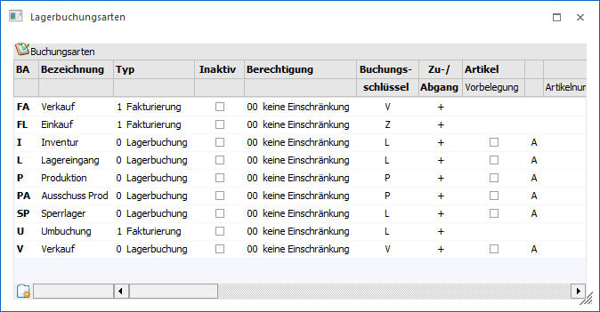
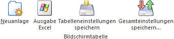
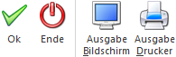

In dem Fenster "Lagerbuchungsarten", welches über…
1 WinLine FAKT
1 Stammdaten
1 Lagerbuchungsart
… geöffnet werden kann, können die Buchungsarten der WinLine FAKT angelegt und / oder editiert werden.
Hinweis
Der Menüpunkt "Lagerbuchungsarten" kann immer nur von einem Benutzer geöffnet sein.

Folgende Spalten stehen in der Tabelle der Buchungsarten zur Verfügung:
Ø BA - Buchungsart
Geben Sie den gewünschten Kurzcode ein, es stehen max. zwei Zeichen zur Verfügung.
Achtung
Damit die WinLine FAKT in allen Fällen ordnungsgemäß arbeiten kann, müssen zumindest die Lagerbuchungsarten L, V und P angelegt sein.
Ø Bezeichnung
Geben Sie eine Kurzbeschreibung des Codes ein, diese wird bei der Lagerbuchhaltung angezeigt.
Ø Typ
Es kann gewählt werden, ob eine Buchungsart für die Fakturierung oder für die Lagerbuchhaltung verwendet werden soll.
ü Lagerbuchung
Buchungsarten mit
dem Typ "Lagerbuchung" können nur in den Menüpunkten Lagerbuchhaltung,
Lagerumbuchung, Inventur buchen, externe Lagerbuchhaltung verwendet werden.
ü Fakturierung
Bei
Fakturierungs-Buchungsarten sind nur die Felder Buchungsart, Bezeichnung, Typ,
Buchungsschlüssel, Inaktiv, Berechtigung und Gruppensumme editierbar. Wenn der
Buchungsschlüssel einer solchen Fakturierungs-Buchungsart geändert wird, werden
auch die Belegarten mitgeändert, in denen diese Lagerbuchungsart verwendet
wird.
Ø Inaktiv
Ist eine Buchungsart auf "Inaktiv" gesetzt, so wird diese nicht mehr in den Auswahllistboxen angezeigt, und kann daher auch nicht mehr verwendet werden. Durch einen Reorg kann diese Buchungsart aus der Datenbank entfernt werden. Voraussetzung dafür ist, dass für den Datensatz keine Bewegungsdaten (Buchungen etc.) vorhanden sind. Nähere Informationen zum Reorganisieren entnehmen Sie bitte dem WinLine START-Handbuch.
Ø Berechtigung
Für jede Lagerbuchungsart kann ein Berechtigungsprofil vergeben werden. Wenn der Anwender eine Lagerbuchungsart aufruft, wird geprüft, ob der Anwender einer Benutzergruppe zugeordnet wurde, welche in dem jeweiligen Profil enthalten ist und ob somit eine Bearbeitung erlaubt wäre (nähere Informationen entnehmen Sie bitte dem WinLine ADMIN - Handbuch).
Hinweis
Benutzern des Typs "Administrator" oder mit der Administratorenberechtigung "Benutzeradministrator" steht in der Auswahlbox der Punkt ">> Neues Profil" zur Verfügung. Über die Anwahl dieses Eintrags kann in der Folge ein neues Berechtigungsprofil angelegt werden.
Ø Buchungsschlüssel
Wählen Sie den Grundbaustein. Es stehen die Buchungsschlüssel…
ü V - Verkauf
ü L - Lager
ü P - Produktion
ü Z - Einkauf (nur bei Buchungsarten vom Typ "Fakturierung")
… zur Verfügung. Jedem Baustein entspricht im Artikelstamm ein Feld, indem die gebuchten Werte kumuliert werden.
Hinweis
Bei einer Lagerbuchungsart mit Buchungsschlüssel L, werden die Bezugsnebenkosten nicht berechnet, wenn als Preis der Einstandspreis verwendet wird.
Hinweis
Bei Verwendung von "Fakturierungs-Buchungsarten" für den Einkauf sollte der Buchungsschlüssel "Z" verwendet werden (dieser verwendet für die Buchung den "Belegpreis", im Gegensatz zum Buchungsschlüssel "L", der den Einstandspreis verwendet).
Ø Zu/Abgang
Wählen Sie das Vorzeichen der Aktion. Die einzelnen Aktionen haben natürliche Vorzeichen.
ü V+ Reduziert den Lagerstand
ü V- Erhöht den Lagerstand (Rücknahme)
ü L+ Erhöht den Lagerstand
ü L- Reduziert den Lagerstand (interne Entnahme)
ü P+ Reduziert den Lagerstand (Produktion)
ü P- Erhöht den Lagerstand
Ø Artikel - Vorbelegung
Wird diese Checkbox aktiviert, kann automatisch ein Artikel vorbelegt werden.
Ø Bestätigung
Wählen Sie "A", wenn der Cursor automatisch im nächsten Feld positioniert werden soll, "S" wenn das Feld für den Bearbeiter gesperrt sein soll.
Ø Artikelnummer
Bestimmen Sie die gewünschte Artikelnummer oder lassen Sie das Feld leer.
Ø Datum - Vorbelegung
Wird diese Checkbox aktiviert, kann automatisch ein Datum vorbelegt werden.
Ø Bestätigung
Wählen Sie "A", wenn der Cursor automatisch im nächsten Feld positioniert werden soll, "S" wenn das Feld für den Bearbeiter gesperrt sein soll.
Ø Datum
Bestimmen Sie das gewünschte Datum oder lassen Sie das Feld leer.
Ø Menge - Vorbelegung
Wird diese Checkbox aktiviert, kann automatisch eine Menge vorbelegt werden.
Ø Bestätigung
Wählen Sie "A", wenn der Cursor automatisch im nächsten Feld positioniert werden soll, "S" wenn das Feld für den Bearbeiter gesperrt sein soll.
Ø Menge
Bestimmen Sie die gewünschte Menge, oder lassen Sie das Feld leer.
Ø Einzelpreis - Vorbelegung
Wird diese Checkbox aktiviert, kann automatisch ein Preis vorbelegt werden.
Ø Bestätigung
Wählen Sie "A", wenn der Cursor automatisch im nächsten Feld positioniert werden soll, "S" wenn das Feld für den Bearbeiter gesperrt sein soll.
Ø Preis
Bestimmen Sie die gewünschte Preisliste. Zur Auswahl der Preisliste drücken Sie den Pfeil nach unten und es werden alle bereits angelegten Preislisten ersichtlich.
Ø Buchungstext - Vorbelegung
Wird diese Checkbox aktiviert, kann automatisch ein Buchungstext vorbelegt werden.
Ø Bestätigung
Wählen Sie "A", wenn der Cursor automatisch im nächsten Feld positioniert werden soll, "S" wenn das Feld für den Bearbeiter gesperrt sein soll.
Ø Text
Bestimmen Sie den gewünschten Text oder lassen Sie das Feld leer.
Ø Buchungstext 2 - Vorbelegung
Wird diese Checkbox aktiviert, kann automatisch ein Buchungstext vorbelegt werden.
Ø Bestätigung
Wählen Sie "A", wenn der Cursor automatisch im nächsten Feld positioniert werden soll, "S" wenn das Feld für den Bearbeiter gesperrt sein soll.
Ø Text
Bestimmen Sie den gewünschten Text oder lassen Sie das Feld leer.
Ø Gruppensumme
Es kann auf eine von 8 Summen am Artikelkontoblatt summiert werden.
Ø Umsatz/Rohertrag
Aktivieren Sie diese Checkbox, wenn Umsatz/Rohertrag verändert werden soll.
Kontenmaskierung für die ordnungsgemäße FIBU-Buchungsübergabe
Pro Buchungsart können Wareneinsatz- und Erlösbuchungen definiert werden, wobei sowohl Soll- als auch Habenkonten hinterlegt werden können. Die Konteneingaben können auch, gleich der Belegart, maskiert werden - das Programm findet anhand der im Artikelstamm hinterlegten Sachkonten (meist Erlöskonten) das richtige Konto. Zusätzlich dazu kann für Wareneinsatz- und Erlösbuchungen ein Buchungstext definiert werden.
Werden in der FAKT-Lagerbuchhaltung Lagerbuchungszeilen manuell erfasst (nicht im Belegerfassen), werden im Hintergrund Buchungszeilen für die FIBU geschrieben. Diese Buchungszeilen werden über die FAKT-Stapel (-1 bis -12) in die FIBU übergeben (dazu muss jedoch der Menüpunkt "Artikeljournal buchen" ausgeführt werden).
Bei den Buchungszeilen handelt es sich um Sachbuchungen ohne OP-Information, jedoch bei Hinterlegung einer Kostenart beim entsprechenden Konto werden KORE-Zeilen geschrieben.
Je nachdem, um welchen Buchungsschlüssel es sich handelt, können bis zu zwei Buchungszeilen erzeugt werden:
ü Buchungsschlüssel V
Wird der
Buchungsschlüssel "V" ausgewählt, können je zwei Konten für die Einsatz- als
auch die Erlösbuchungen hinterlegt werden.
ü Buchungsschlüssel L
Wird der
Buchungsschlüssel "L" ausgewählt, können zwei Konten für die Einsatzbuchung
hinterlegt werden.
Für die FIBU-Übergabe kann in den Spalten "Buchungsart" eine solche angegeben werden. Dabei stehen alle FIBU-Buchungsarten zur Verfügung, die den Buchungsschlüssel "B" zugeordnet haben (es stehen keine Mikrostapel-Buchungsarten zur Verfügung). Werden im Menüpunkt "Artikeljournal buchen" Lagerbuchungen in die FIBU übergeben, so wird die ausgewählte Buchungsart verwendet. Achtung, es wird dabei nur die Buchungsart übergeben, weitere Einstellungen wie Datum, Nummernkreis etc. aus der Buchungsart werden dabei nicht berücksichtigt.
Ø letzten EK aktualisieren
Bei Aktivierung dieser Checkbox, wird beim Erfassen eines Lagerzuganges mit dieser Lagerbuchungsart, der Einkaufspreis in den Artikelstamm in das Feld letzter Einkaufspreis zurückgeschrieben. In den Fakt-Parametern kann zusätzlich noch eingestellt werden, ob der Zeilenrabatt, der Summenrabatt und der Skonto berücksichtigt werden sollen.
Ø niedrigsten EK aktualisieren
Bei Aktivierung dieser Checkbox, wird beim Erfassen eines Lagerzuganges mit dieser Lagerbuchungsart, der Einkaufspreis in den Artikelstamm in das Feld niedrigster Einkaufspreis zurückgeschrieben, wenn der im Artikelstamm gespeicherte Einkaufspreis größer als der aktuelle oder 0 ist. In den Fakt-Parametern kann zusätzlich noch eingestellt werden, ob der Zeilenrabatt, der Summenrabatt und der Skonto berücksichtigt werden sollen.
Ø Freigabestatus
Damit kann der angegebene Status vergeben werden, wenn in der Lagerbuchhaltung eine neue Ausprägung im Aufteilungsfenster angelegt wird; diese neue Ausprägung erhält dabei den Status lt. dieser Einstellung.
Zur Auswahl stehen alle angelegten Freigabestati und die Einstellung "lt. Freigabedefinition" in der Auswahllistbox zur Verfügung.
Ø Freigabe prüfen
Durch Aktivieren der Checkbox kann festgelegt werden, dass der beim Artikel hinterlegte Freigabestatus bei Verwendung dieser Lagerbuchungsart geprüft werden soll.
In der Lagerbuchhaltung gibt es zu auch eine eigene Spalte, die den Freigabestatus des jeweiligen Artikels anzeigt.
Ø Sperrlager
Mittels dieser Option wird gesteuert, dass, wenn ein Artikel, der eine Ausprägung mit der Option "Lagerort" und "Sperrlager" verwendet, für diesen Artikel eine Sperrlagerzeile geschrieben wird.
Ø Lagerstandsunterschreitung
Aus der Auswahlliste kann gewählt werden wie eine Lagerstandsunterschreitung in den Menüpunkten "Lagerbuchhaltung" und "Lagerumbuchung (Auspr.)" behandelt werden soll:
ü 0 - erlaubt
Die Unterschreitung
eines Lagerstandes kleiner 0 ist erlaubt.
ü 1 - erlaubt mit Warnung
Die
Unterschreitung eines Lagerstandes kleiner 0 ist erlaubt, es wird allerdings
eine Warnung bei der Erfassung ausgegeben.
ü 2 - nicht erlaubt
Die
Unterschreitung eines Lagerstandes kleiner 0 ist verboten.
ü 3 - erlaubt mit Warnung (abzgl.
kommissionierter Menge)
Die Unterschreitung eines Lagerstandes kleiner 0 ist
erlaubt; es wird hierauf allerdings bei der Belegerfassung hingewiesen. Bei der
Berechnung des Lagerstandes wird die bereits kommissionierte Menge
berücksichtigt.
ü 4 - nicht erlaubt (abzgl.
kommissionierter Menge)
Die Unterschreitung eines Lagerstandes kleiner 0 ist
verboten, wobei bei der Berechnung des Lagerstandes die bereits kommissionierte
Menge berücksichtigt wird.
ü 5 - erlaubt mit Warnung (inkl.
Lagerorte)
Es wird geprüft, ob die eingegebene Menge auch tatsächlich am
Lagerort verfügbar ist. Sollte dieses nicht der Fall sein, so wird eine
Hinweismeldung am Bildschirm ausgegeben.
ü 6 - nicht erlaubt (inkl.
Lagerorte)
Eine Unterschreitung des Lagerbestands auf einem Lagerort ist
nicht erlaubt.
Hinweis
Im Menüpunkt "Lagerorte bearbeiten (Auspr.)" erfolgt bereits bei der Eingabe der Menge eine entsprechende Meldung, falls die verfügbare Menge unterschritten wird. Da die Lagerbuchungsart erst im letzten Schritt angegeben und geladen wird, wird vor dem Buchen bei der Verwendung einer Lagerbuchungsart mit der Option "Lagerstandsunterschreitung nicht erlaubt" der Lagerstand erneut geprüft. Würde dabei der Lagerstand unterschritten werden, so wird die Buchung abgebrochen.
Ø Rezeptartikel / Buchungsart
Durch Aktivierung der Option "Rezeptartikel" können die Bestandteile eines Rezeptartikels, welcher über diese Lagerbuchungsart erfasst wurde, in der Folge automatisch gebucht werden (Programm "Artikeljournal buchen" - Register "Rezeptartikel buchen"). Neben der Option steht die Spalte "Buchungsart" zur Verfügung. Mit dieser Lagerbuchungsart werden dann die Bestandteile eines Rezeptartikels gebucht.
Tabellenbuttons

Ø Neuanlage
Durch Anwahl dieses Buttons kann eine neue Lagerbuchungsart angelegt werden.
Ø Ausgabe Excel
Durch Anwahl des Buttons "Ausgabe Excel" wird der Inhalt der Tabelle an Microsoft Excel übergeben.
Ø Tabelleneinstellungen speichern
Die Spalten einer Tabelle können grundsätzlich an beliebige Positionen verschoben, bzw. in der Breite entsprechend angepasst werden. Durch Anwahl des Buttons "Tabelleneinstellungen speichern" werden die Einstellungen benutzerspezifisch gespeichert und bei dem nächsten Aufruf des Programmpunktes wieder vorgeschlagen.
Ø Gesamteinstellungen speichern
Im Gegensatz zu "Tabelleneinstellungen speichern" können mit "Gesamteinstellungen speichern" mehrere Tabellenaufbauten gespeichert und nach Wunsch geladen werden. Zusätzlich werden Sonderfunktionen der Tabelle (z.B. "Spalte gruppieren") ebenfalls bei der Speicherung bedacht.
Buttons

Ø Ok
Durch Anwahl des Buttons "Ok" bzw. der Taste F5 werden die Änderungen gespeichert bzw. die neuen Lagerbuchungsarten erzeugt.
Ø Ende
Durch Drücken des Buttons "Ende" bzw. der Taste ESC wird das Fenster geschlossen und alle nicht gespeicherten Eingaben verworfen.
Ø Ausgabe Bildschirm / Ausgabe Drucker
Mit Hilfe dieser Buttons kann eine Liste aller angelegter Lagerbuchungsarten entweder am Bildschirm oder am Drucker ausgegeben werden.